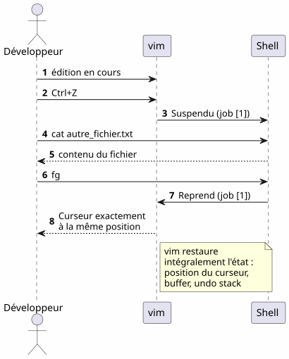
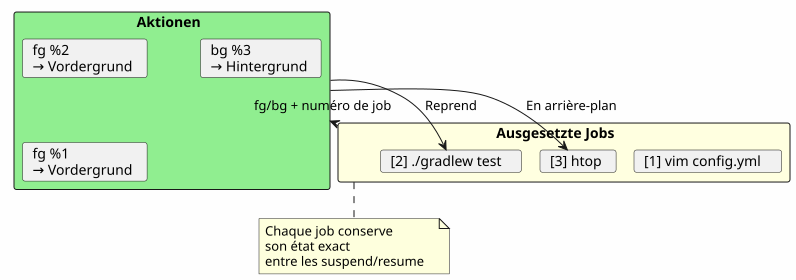
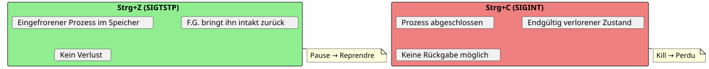
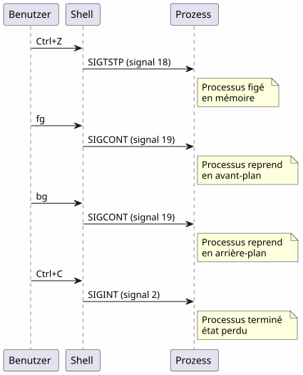

Die super Tipps des fg-Befehls: wenn Ctrl+Z Ihre Terminalsitzung rettet
Publié le 18 April 2026
- Das Problem: ein besetztes Terminal
- Die drei unverzichtbaren Befehle
- Szenario 1: Der lange Build
- Szenario 2: Der vergessene Editor
- Szenario 3: Der opencode-Prozess ist ausgesetzt
- Szenario 4: Mehrere Jobs gleichzeitig verwalten
- Unterschiede zwischen fg, bg, Strg+Z, Strg+C und &
- Der vollständige Lebenszyklus eines Jobs
- Fortgeschrittene Tipps
- Fallen und häufige Fehler
- Zusammenfassendes Diagramm
- Warum ist fg unterschätzt?
- Technisches Gedächtnis : die Signale
- Fazit
- Referenzen
Sie werfen`./gradlew build`, das Terminal ist für 3 Minuten blockiert, und du musst etwas anderes machen während du wartest ? Du musst kein neues Tab öffnen.`Ctrl+Z`hält den Prozess an,`fg`Es bringt es genau zurück dorthin, wo Sie es gelassen haben. Es ist der am meisten unterschätzte Unix-Tipp im Alltag eines Entwicklers.
- Tic
-
[]
Das Problem: ein besetztes Terminal
Jeder Entwickler hat diese Situation schon erlebt :
$ ./gradlew build
> Building...Der Terminal ist blockiert. Sie können keine Befehle mehr eingeben. Und Sie müssen eine Datei ansehen, ein`git status`, oder einen belegten Port überprüfen.
Failed to generate image: PlantUML preprocessing failed: [From <input> (line 6) ] @startuml skinparam backgroundColor #FEFEFE actor Développeur as dev participant "Terminal" as term participant "Gradle ^^^^^ Syntax Error? (Assumed diagram type: sequence) @startuml skinparam backgroundColor #FEFEFE actor Développeur as dev participant "Terminal" as term participant "Gradle ( Prozess )" as gradle dev -> term : ./gradlew build term -> gradle : Lance le build gradle -> term : Occupe le terminal\n(pas de prompt) dev -> term : veut taper une commande term --> dev : ❌ Terminal bloqué note right of dev Le développeur est paralysé pendant toute la durée du build end note @enduml
Die meisten Entwickler öffnen ein neues Terminal. Aber es gibt eine elegantere, schnellere und eingebaute Lösung: das Job-Management.
Die drei unverzichtbaren Befehle
Ctrl+Z — Anhalten (SIGTSTP)
`Ctrl+Z`sendet das Signal`SIGTSTP`dem Prozess im Vordergrund. Der Prozess istausgesetzt— nicht getötet — und das Terminal erhält wieder seinen Prompt.
$ ./gradlew build
> Building...
^Z
[1]+ Stoppé ./gradlew build
$Die Zahl in Klammern`[1]`ist derJobnummer. Le `+`gibt den Standardjob an.
fg — In den Vordergrund holen
`fg`Bringt den angehaltenen Job in den Vordergrund. Der Prozess setzt genau dort fort, wo er aufgehört hat.
$ fg
./gradlew build
> Building... (reprend où il en était)Mit einer spezifischen Jobnummer:
$ fg %2bg — Im Hintergrund fortsetzen
`bg`Den Vorgang fortsetzen, ohne das Terminal zu blockieren. Ideal für lange Builds.
$ bg
[1]+ ./gradlew build &
$Le `&`am Ende bedeutet, dass der Prozess im Hintergrund läuft.
jobs — Auflisten der Shell-Jobs
$ jobs
[1]- Stoppé vim README.md
[2]+ En cours ./gradlew buildFailed to generate image: PlantUML preprocessing failed: [From <input> (line 5) ] @startuml skinparam backgroundColor #FEFEFE skinparam defaultFontName sans-serif state "Vordergrund ^^^^^ Syntax Error? (Assumed diagram type: sequence) @startuml skinparam backgroundColor #FEFEFE skinparam defaultFontName sans-serif state "Vordergrund (blockierter Terminal)" as fg #LightCoral state "Ausgesetzt\n(Ctrl+Z)" as stopped #LightYellow state "Hintergrund\n(bg)" as bg_ #LightGreen [*] --> fg : Lance une commande fg --> stopped : Ctrl+Z\n(SIGTSTP) stopped --> fg : fg\nreprend en avant-plan stopped --> bg_ : bg\nreprend en arrière-plan bg_ --> fg : fg\nramène en avant-plan fg --> [*] : Commande terminée note right of stopped Le processus est figé mais _pas_ tué end note note left of bg_ Le terminal est libre le build continue end note @enduml
Szenario 1: Der lange Build
Das ist der häufigste Anwendungsfall. Sie starten einen Gradle-Build, das Terminal ist blockiert, und Sie müssen etwas anderes tun.
Failed to generate image: PlantUML preprocessing failed: [From <input> (line 8) ] @startuml skinparam backgroundColor #FEFEFE autonumber actor Développeur as dev participant "Terminal" as term participant "Gradle" as gradle database "Zustand ^^^^^ Syntax Error? (Assumed diagram type: sequence) @startuml skinparam backgroundColor #FEFEFE autonumber actor Développeur as dev participant "Terminal" as term participant "Gradle" as gradle database "Zustand Prozess" as state dev -> term : ./gradlew build term -> gradle : Lance le build gradle -> state : En cours (FG) dev -> term : Ctrl+Z term -> state : Suspendu (job [1]) term --> dev : Prompt libre $ dev -> term : git status term --> dev : working tree clean dev -> term : fg term -> state : Reprend (FG) gradle --> dev : Build réussi ✓ note right of state Le processus Gradle n'a jamais été tué Il reprend exactement où il s'était arrêté end note @enduml
Schritt für Schritt
$ ./gradlew build
> Building...
^Z
[1]+ Stoppé ./gradlew build
$ git status
On branch main
nothing to commit, working tree clean
$ fg
./gradlew build
> Building...
BUILD SUCCESSFUL in 2m 34sSzenario 2: Der vergessene Editor
Sie sind in`vim`, Sie benötigen, eine andere Datei zu konsultieren, ohne sie zu verlassen`vim`.
# Dans vim, en mode commande :
:shell
$ cat /path/to/other/file.txt
$ exit
# Retour dans vimAber es ist schwer. Mit`Ctrl+Z`, es ist sofort:
# Dans vim, n'importe quel moment :
Ctrl+Z
[1]+ Stoppé vim README.md
$ cat /path/to/other/file.txt
# ... lire le fichier ...
$ fg
vim README.md
# Retour exact là où on en était, curseur en place
vim`stellt seinen Zustand nach einem perfekt wieder her`fg: Position des Cursors, Inhalt des Puffers, Undo-Verlauf – alles wird beibehalten.
|
Szenario 3: Der opencode-Prozess ist ausgesetzt
Dies ist das Szenario, das diesen Artikel motiviert hat. Sie verwenden`opencode`(CLI-Tool zum Steuern eines LLM auf deinem Code), und der Prozess ist ausgesetzt.
Failed to generate image: PlantUML preprocessing failed: [From <input> (line 7) ] @startuml skinparam backgroundColor #FEFEFE skinparam defaultFontName sans-serif skinparam componentStyle rectangle actor Développeur as dev participant "opencode ^^^^^ Syntax Error? (Assumed diagram type: sequence) @startuml skinparam backgroundColor #FEFEFE skinparam defaultFontName sans-serif skinparam componentStyle rectangle actor Développeur as dev participant "opencode (LLM-Agent)" as agent participant "Shell" as shell participant "git" as git dev -> agent : Session active agent -> agent : Tour de parole\ndu LLM en cours note over agent Ctrl+Z arrive en plein milieu d'une analyse de code end note dev -> agent : Ctrl+Z agent -> shell : Suspendu (job [1]) dev -> git : git diff git --> dev : changements visibles dev -> shell : fg shell -> agent : Reprend (job [1]) agent --> dev : Reprend exactement\nl'analyse en cours note right of agent Aucune perte de contexte Le LLM reprend sa réponse exactement où il en était end note @enduml
$ opencode
# ... session en cours, LLM analyse le code ...
^Z
[1]+ Stoppé opencode
$ git diff HEAD~1
# vérifier les changements récents
$ fg
opencode
# Le LLM reprend là où il s'était arrêtéDer Vorteil ist doppelt:
-
Kein Kontextverlust: die LLM-Sitzung, der Conversationsverlauf, die geöffneten Dateien — alles wird erhalten
-
Kein Neustart: keine Notwendigkeit, opencode neu zu starten, den Kontext neu zu laden, das Problem dem LLM noch einmal zu erklären
Szenario 4: Mehrere Jobs gleichzeitig verwalten
fg et `bg`Sie akzeptieren eine Jobnummer, um einen bestimmten Prozess anzusprechen, wenn mehrere ausgesetzt sind.
$ vim config.yml
^Z
[1]+ Stoppé vim config.yml
$ ./gradlew test
^Z
[2]+ Stoppé ./gradlew test
$ htop
^Z
[3]+ Stoppé htop
$ jobs
[1] Stoppé vim config.yml
[2]- Stoppé ./gradlew test
[3]+ Stoppé htop
$ fg %2
./gradlew test
# Le build reprend en avant-plan
$ bg %3
[3] htop &
# htop reprend en arrière-plan
Zusammenfassung der Jobbefehle
| Bestellung | Effekt | Beispiel |
|---|---|---|
|
Anhalte den Vordergrundprozess |
Versand von`SIGTSTP` |
|
Nimm den Standardjob wieder im Vordergrund auf |
|
|
Bring den Job n in den Vordergrund |
|
|
Nimm den Standardjob im Hintergrund wieder auf |
|
|
Setze den Job n im Hintergrund fort |
|
|
Liste die Jobs der aktuellen Shell |
|
|
Beende den Job n |
|
Unterschiede zwischen fg, bg, Strg+Z, Strg+C und &
Viele Entwickler verwechseln diese Mechanismen. Hier ist eine entscheidende Klarstellung.
Failed to generate image: PlantUML preprocessing failed: [From <input> (line 6) ]
@startuml
skinparam backgroundColor #FEFEFE
skinparam defaultFontName sans-serif
rectangle "**Strg+Z**
SIGTSTP" as ctrlz #LightYellow {
^^^^^
Syntax Error? (Assumed diagram type: activity)
@startuml
skinparam backgroundColor #FEFEFE
skinparam defaultFontName sans-serif
rectangle "**Strg+Z**
SIGTSTP" as ctrlz #LightYellow {
card "Prozess anhalten
(Er ist immer noch im Speicher)
Kann mit fg/bg verwendet werden" as c1
}
rectangle "**Ctrl+C**\nSIGINT" as ctrlc #LightCoral {
card "Töte den Prozess
(keine Rückkehr möglich)
Verlust des gesamten Zustands" as c2
}
rectangle "** & \n(Hintergrund)" as ampersand #LightGreen {
card "Starte direkt
im Hintergrund
Terminal sofort frei" as c3
}
rectangle "**fg**\n(Vordergrund)" as fg_ #SkyBlue {
card "Bringe einen Job
im Vordergrund angehalten
Terminal belegt" as c4
}
rectangle "**bg**
(Hintergrund)" as bg_ #Lavender {
card "Setze den Job fort
im Hintergrund angehalten
Freies Terminal" as c5
}
ctrlz -right-> fg_ : fg pour reprendre
ctrlz -right-> bg_ : bg pour continuer\nen arrière-plan
ctrlc -right-> c2 : Pas de retour\nprocessus tué
note bottom of ctrlz
Le processus est **figé**
mais **pas tué**
end note
note bottom of ampersand
Alternative : lancer
./gradlew build &
directement en arrière-plan
end note
@enduml
| Abkürzung/Befehl | Signal | Effekt | Zurückgehen? |
|---|---|---|---|
|
|
Den Prozess aussetzen (eingefroren, im Speicher) |
Ja :`fg` ou |
|
|
Töte den Prozess (abgeschlossen) |
Nein : Prozess zerstört |
|
|
Beende den Prozess + core dump |
Nein : Prozess zerstört |
|
— |
Starte im Hintergrund direkt |
`fg`um es wieder in den Vordergrund zu bringen |
Ctrl+Z`istzerstörungsfrei. Der Prozess ist eingefroren, so wie er ist, im Speicher. Sie können sofort damit fortsetzen`fg. Es ist eine Pause, kein Halt.
|
Der vollständige Lebenszyklus eines Jobs
Failed to generate image: PlantUML preprocessing failed: [From <input> (line 7) ] @startuml skinparam backgroundColor #FEFEFE skinparam defaultFontName sans-serif title vollständiger Lebenszyklus eines Shell-Jobs state "nicht existent" as none state "Vordergrund ^^^^^ Syntax Error? (Assumed diagram type: state) @startuml skinparam backgroundColor #FEFEFE skinparam defaultFontName sans-serif title vollständiger Lebenszyklus eines Shell-Jobs state "nicht existent" as none state "Vordergrund (belegt das Terminal)" as foreground #LightCoral state "Ausgesetzt (Ctrl+Z / SIGTSTP)" as suspended #LightYellow state "Background (bg oder &)" as background #LightGreen state "Beendet\n(exit code 0)" as done #LightGray [*] --> none none --> foreground : tape une commande foreground --> suspended : Ctrl+Z foreground --> done : fin normale suspended --> foreground : fg suspended --> background : bg suspended --> done : kill %n background --> foreground : fg background --> done : fin normale\n(en arrière-plan) background --> suspended : Ctrl+Z\n(si fg puis Ctrl+Z) done --> [*] note right of suspended L'état suspendu est le pivot de tout le système de jobs end note @enduml
Fortgeschrittene Tipps
fg mit dem aktuellsten Job und der Wechsel
fg`Ohne Argument bringt es den markierten Auftrag zurück+(der neueste). Aber Sie können auch verwenden%-`um den vorherigen Job zu targeten:
$ vim file1.txt
^Z
[1]+ Stoppé vim file1.txt
$ vim file2.txt
^Z
[2]+ Stoppé vim file2.txt
$ fg # ramène job [2] (le plus récent)
$ fg %- # ramène job [1] (le précédent)einen Job ordentlich erledigen
$ jobs
[1]- Stoppé vim config.yml
[2]+ Stoppé ./gradlew test
$ kill %2 # envoie SIGTERM au job 2
$ kill -9 %1 # envoie SIGKILL au job 1 (force)désown : von der Shell trennen
disown`Entfernt einen Job aus der Job-Tabelle der Shell. Der Prozess läuft weiter, kann aber nicht mehr mit`fg :
$ ./gradlew build &
[1] 12345
$ disown %1
# Le processus continue mais n'est plus lié au shell
# Ça survives à la fermeture du terminalKombinieren mit nohup für lange Prozesse
Damit ein Prozess die Schließung des Terminals überlebt:
$ nohup ./gradlew build &
[1] 12345
$ disown %1
# Le build continue même si vous fermez le terminalFailed to generate image: PlantUML preprocessing failed: [From <input> (line 18) ]
@startuml
skinparam backgroundColor #FEFEFE
skinparam defaultFontName sans-serif
rectangle "fg" as fg_ #SkyBlue {
card "Bring den neuesten Job\n(+)" as f1
card "Ziel einen spezifischen Job: fg %n" as f2
card "Wechsle : fg %-%" as f3
}
rectangle "töte %n" as kill_ #LightCoral {
card "SIGTERM (sauber)" as k1
card "SIGKILL -9 (Zwangsbeendigung)" as k2
}
rectangle "verstoßen" as disown #Lavender {
card "Trenne von der Shell
(überlebt die Abmeldung)" as d1
^^^^^
Syntax Error? (Assumed diagram type: activity)
@startuml
skinparam backgroundColor #FEFEFE
skinparam defaultFontName sans-serif
rectangle "fg" as fg_ #SkyBlue {
card "Bring den neuesten Job\n(+)" as f1
card "Ziel einen spezifischen Job: fg %n" as f2
card "Wechsle : fg %-%" as f3
}
rectangle "töte %n" as kill_ #LightCoral {
card "SIGTERM (sauber)" as k1
card "SIGKILL -9 (Zwangsbeendigung)" as k2
}
rectangle "verstoßen" as disown #Lavender {
card "Trenne von der Shell
(überlebt die Abmeldung)" as d1
}
rectangle "nohup + &" as nohup_ #LightGreen {
card "Immunisierter Prozess
gegen SIGHUP
(überlebt das Schließen
des Terminals)" as n1
}
fg_ -right-> kill_ : si faut\nterminer
kill_ -right-> disown_ : ou détacher
nohup_ -left-> fg_ : fg ramène en\navant-plan
note bottom of disown_
Après disown, fg ne peut
plus ramener le job
end note
@enduml
Fallen und häufige Fehler
Ctrl+Z und Ctrl+C verwechseln
Das ist der häufigste Fehler.`Ctrl+C`Töte den Prozess.`Ctrl+Z`es aussetzt. Wenn Sie drücken`Ctrl+C`aus Reflex, der gesamte Zustand ist verloren – offene Dateien, LLM-Sessions, Builds im Gange.

Die Jobs sind lokal zur Shell
jobs, fg et `bg`Sie funktionieren nur in der Shell, die die Prozesse gestartet hat. Wenn Sie ein neues Terminal öffnen, sehen Sie die Jobs des anderen nicht.
# Terminal 1
$ vim file.txt
^Z
[1]+ Stoppé vim file.txt
# Terminal 2 (nouveau)
$ jobs
# (rien — les jobs sont locaux au shell)Um die systemweiten Prozesse anzuzeigen, verwenden Sie`ps` ou htop:
ps aux | grep vimDie Jobs überleben das Schließen der Shell nicht
Wenn Sie das Terminal schließen, werden alle angehaltenen oder Hintergrundjobs beendet. Damit ein Prozess weiterläuft, verwenden Sie`nohup`+disown:
$ nohup ./gradlew build &
[1] 12345
$ disown %1
# Fermer le terminal → le build continueDie interaktiven Prozesse und fg
Einige interaktive Programme gehen nach einem nicht gut.Ctrl+Z+fg. Es ist selten, aber es passiert:
-
Einige Programme, die Signale verwenden (vim, htop, less handhaben gut`Ctrl+Z`)
-
Laufende Netzwerkprogramme (ssh, opencode) rufen in der Regel korrekt ab
-
Programme, die das Terminal ändern (ncurses), können das Terminal manchmal in einem unerwarteten Zustand hinterlassen
Im Fall eines beschädigten Terminals nach einem`fg`, geben Sie :
resetZusammenfassendes Diagramm
Failed to generate image: PlantUML preprocessing failed: [From <input> (line 27) ]
@startuml
skinparam backgroundColor #FEFEFE
skinparam defaultFontName sans-serif
skinparam ArrowColor #444444
title "fg — Der Tipp, der alles ändert"
rectangle "Problem" as problem #LightCoral {
card "Terminal blockiert\ndurch einen Prozess" as p1
card "Ein neues\nTerminal öffnen = aufwändige Lösung" as p2
}
rectangle "**Lösung**" as solution #LightGreen {
card "Strg+Z → aussetzen" as s1
card "fg → setzt fort" as s2
card "bg → im Hintergrund" as s3
card "Jobs → Angehaltene anzeigen" as s4
}
rectangle "Vorteile" as advantages #SkyBlue {
card "Kein Verlust des Kontextes" as a1
card "Kein Neustart" as a2
card "Ein Terminal reicht" as a3
}
problem -right-> solution : "Die native Lösung
Unix seit 40 Jahren"
^^^^^
Syntax Error? (Assumed diagram type: component)
@startuml
skinparam backgroundColor #FEFEFE
skinparam defaultFontName sans-serif
skinparam ArrowColor #444444
title "fg — Der Tipp, der alles ändert"
rectangle "Problem" as problem #LightCoral {
card "Terminal blockiert\ndurch einen Prozess" as p1
card "Ein neues\nTerminal öffnen = aufwändige Lösung" as p2
}
rectangle "**Lösung**" as solution #LightGreen {
card "Strg+Z → aussetzen" as s1
card "fg → setzt fort" as s2
card "bg → im Hintergrund" as s3
card "Jobs → Angehaltene anzeigen" as s4
}
rectangle "Vorteile" as advantages #SkyBlue {
card "Kein Verlust des Kontextes" as a1
card "Kein Neustart" as a2
card "Ein Terminal reicht" as a3
}
problem -right-> solution : "Die native Lösung
Unix seit 40 Jahren"
solution -right-> advantages : "Ergebnis"
note bottom of advantages
fg n'est pas un tips obscur
C'est un mécanisme fondamental
du shell Unix
end note
@enduml
Warum ist fg unterschätzt?
Die meisten modernen Entwickler entdecken`fg`spat, vielleicht sogar nie. Einige Gründe:
-
Die IDEs verstecken das Terminal: VS Code bietet ein integriertes Terminal an, aber mehrere Tabs machen`fg`anscheinend weniger notwendig
-
Graphische Tools ersetzen die CLI: die Dateiverwalter, die Systemmonitore, die grafischen Git-Clients
-
tmux und screen: diese Multiplexer lösen das gleiche Problem anders, aber`fg`ist einfacher und immer verfügbar
Dennoch,`fg`ist :
-
Universal: vorhanden in allen POSIX-Shells (bash, zsh, fish…)
-
Ohne Abhängigkeit: Keine Notwendigkeit, tmux oder screen zu installieren.
-
Schnappschuss: zwei Schläge (
Ctrl+Z`dann`fg) zum Anhalten und Fortsetzen -
Kontextbewahrer: Der Zustand des Prozesses ist intakt
Failed to generate image: PlantUML preprocessing failed: [From <input> (line 6) ]
@startuml
skinparam backgroundColor #FEFEFE
skinparam defaultFontName sans-serif
rectangle "Warum fg ist
unterschätzt?" as why #LightCoral {
^^^^^
Syntax Error? (Assumed diagram type: activity)
@startuml
skinparam backgroundColor #FEFEFE
skinparam defaultFontName sans-serif
rectangle "Warum fg ist
unterschätzt?" as why #LightCoral {
card "IDE mit Terminal
Multi-Tabs" as w1
card "grafische Werkzeuge\ndie die CLI ersetzen" as w2
card "tmux/screen
lösen das Problem andernfalls" as w3
}
rectangle "Warum ist fg
überlegen ?" as superior #LightGreen {
card "Universal: bash,\nzsh, fish, sh..." as s1
card "Unabhängigkeit:
Keine Installation" as s2
card "Zwei Schläge :\nCtrl+Z dann fg" as s3
card "Erhaltener Kontext:
nuller Zustandsverlust" as s4
}
why -right-> superior : "Die Einfachheit
gewinnt immer"
@enduml
Technisches Gedächtnis : die Signale
Für die Neugierigen, hier sind die beteiligten Signale:
| Signal | Name | Gesendet von | Effekt |
|---|---|---|---|
2 |
|
|
Unterbrechung — beendet den Prozess |
3 |
|
|
Verlasse mit Core Dump |
18 |
|
|
Interaktiver Stopp — setzt den Prozess aus |
19 |
|
|
Fortsetzen — setzt einen angehaltenen Prozess fort |
15 |
|
|
Saubere Beendigung |
9 |
|
|
Erzwungene Beendigung (nicht abfangbar) |
Der vollständige Fluss :

Fazit
`fg`Es ist kein obskurer Tipp — es ist ein grundlegendes Mechanismus der Unix-Shell, verfügbar seit den 1970er Jahren. Die Tatsache, dass die meisten Entwickler es nicht kennen, ist ein Symptom unserer Zeit: IDEs und Multiplexer haben uns von den Grundlagen entfernt.
Aber wenn Sie auf einem SSH-Server sind, in einem Minimal-Terminal, oder einfach nur dabei sind zu verwenden`opencode`und dass das LLM gerade arbeitet —Ctrl+Z, fg, bg, `jobs`sind deine besten Freunde.
_ Ctrl+Z pausiert, fg setzt fort. Das ist das Pause-Play des Terminals. _
Referenzen
-
man bash— Abschnitt JOB CONTROL -
man signal— Liste der POSIX-Signale